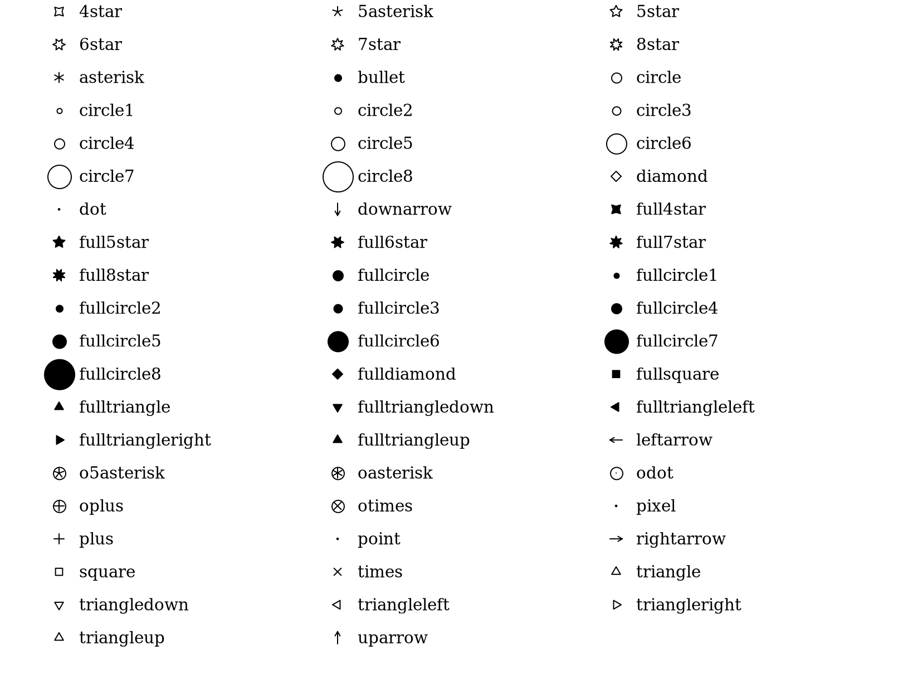
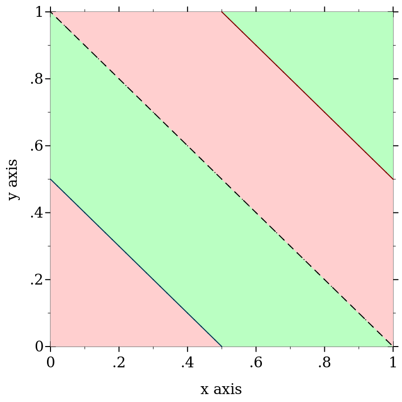
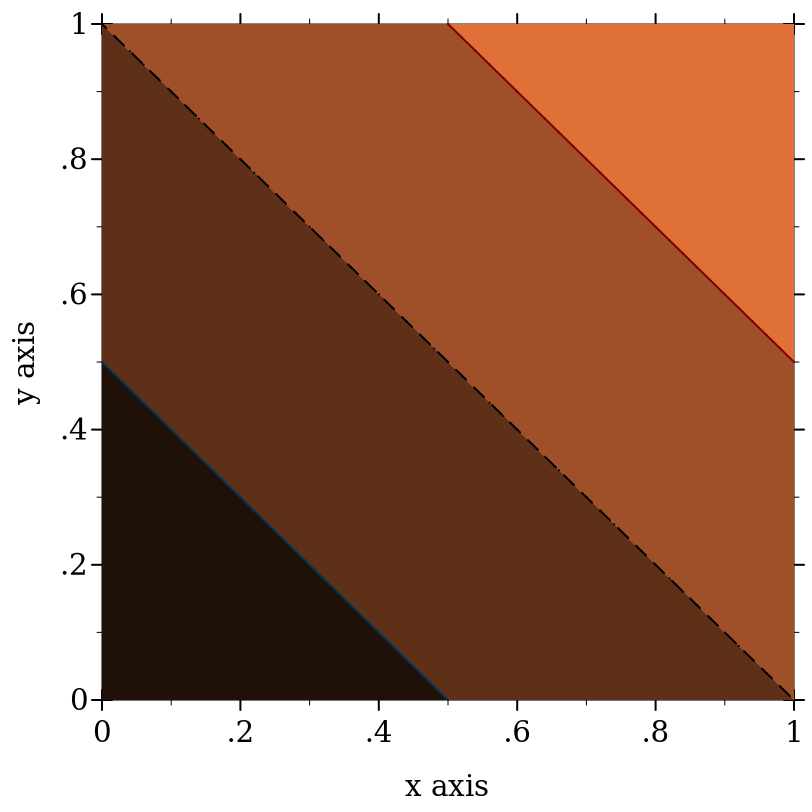

9 绘图合约
| (require plot/utils) | package: plot-lib |
9.1 绘图元素合同
procedure
(renderer2d? value) → boolean?
value : any/c
procedure
(renderer3d? value) → boolean?
value : any/c
procedure
(nonrenderer? value) → boolean?
value : any/c
9.2 外观参数合同
value
=
(one-of/c 'top-left 'top 'top-right 'left 'center 'right 'bottom-left 'bottom 'bottom-right 'auto)
'auto 锚点将放置标签,使其在绘图区可见。 这种锚点类型对于 point-label 和类似的渲染器非常有用, 在这种情况下,标记的点可能在绘图区域的边缘,而用户不希望为标签计算出准确的锚点。
'auto 锚定将选择 'bottom-left, 'bottom-right, 'top-left 或 'top-right 中的一个位置, 按顺序排列,并使用第一个能使标签完全可见的位置。
'auto 锚点只对放置文本标签有效,对于所有其他使用情况, 'auto 锚点总是与 'bottom-left 相同。
value
=
(or/c anchor/c (one-of/c 'outside-top-left 'outside-top 'outside-top-right 'outside-left-top 'outside-left 'outside-left-bottom 'outside-right-top 'outside-right 'outside-right-bottom 'outside-bottom-left 'outside-bottom 'outside-bottom-right 'outside-global-top 'no-legend))
当 legend-anchor 是 anchor/c 中的一个符号时,图例将被放在绘图区域内。
legend-anchor/c 的值以 "outside" 开头,将把图例放在绘图区域之外, 对于 2D 绘图,图例将与绘图区域对齐,而对于3D绘图, 图例将相对于整个 plot-width 和 plot-height 。
'outside-global-top 值将把图例置于绘图区域之上,以整个 plot-width 为中心。 对于 3D 绘图来说,这个值和 'outside-top 没有区别。
'no-legend 的值将从绘图中省略图例,如果渲染器中没有指定 #:label , 无论 #:legend-anchor 使用什么值,图例也将被省略。
值 'auto 将把图例放在绘图区域的左上角,这对绘图图例来说是没有用的, 这个锚点值用于呈现器,如 point-label 。
Added in version 7.9 of package plot-lib.
value
value
=
(or/c exact-integer? (one-of/c 'transparent 'solid 'dot 'long-dash 'short-dash 'dot-dash))
Added in version 8.10 of package plot-lib.
value
=
(or/c exact-integer? (one-of/c 'transparent 'solid 'bdiagonal-hatch 'fdiagonal-hatch 'crossdiag-hatch 'horizontal-hatch 'vertical-hatch 'cross-hatch))
value
字符和字符串将为绘图上的每个点渲染该字符或字符串, known-point-symbols 中的一个符号将渲染相应的符号, 而一个整数值代表 known-point-symbols 列表中的索引, 这可用于通过递增一个数字为不同的点渲染器自动生成不同的符号。
value
=
(list 'dot 'point 'pixel 'plus 'times 'asterisk '5asterisk 'odot 'oplus 'otimes 'oasterisk 'o5asterisk 'circle 'square 'diamond 'triangle 'fullcircle 'fullsquare 'fulldiamond 'fulltriangle 'triangleup 'triangledown 'triangleleft 'triangleright 'fulltriangleup 'fulltriangledown 'fulltriangleleft 'fulltriangleright 'rightarrow 'leftarrow 'uparrow 'downarrow '4star '5star '6star '7star '8star 'full4star 'full5star 'full6star 'full7star 'full8star 'circle1 'circle2 'circle3 'circle4 'circle5 'circle6 'circle7 'circle8 'bullet 'fullcircle1 'fullcircle2 'fullcircle3 'fullcircle4 'fullcircle5 'fullcircle6 'fullcircle7 'fullcircle8 'none)

value
= (or/c 'auto 'png 'jpeg 'xmb 'xpm 'bmp 'ps 'pdf 'svg)
9.3 外观参数列表合同
procedure
(maybe-function/c in-contract out-contract) → contract?
in-contract : contract? out-contract : contract?
= (or/c out-contract (in-contract . -> . out-contract))
> (require racket/contract)
> (define/contract (maybe-function-of-real-consumer x) ((maybe-function/c real? real?) . -> . real?) (maybe-apply x 10)) > (maybe-function-of-real-consumer 4) 4
> (maybe-function-of-real-consumer (λ (x) x)) 10
许多 plot 函数,例如 contours 和 isosurfaces3d, 可以选择接受外观值的列表(例如 (listof plot-color/c)) 作为参数。 一个非常灵活的参数契约将接受产生外观值列表的 functions 。 例如, contours 将接受任何带有契约 (-> (listof real?) (listof plot-color/c)) 的 f 作为其 #:colors 参数。 当渲染等高线图时, contours 会将 f 应用到等高线 z 值的列表中以得到等高线的颜色。
然而,大多数用途不需要这种灵活性。 因此, plot 的函数 要么 接受一个外观值的列表, 要么 接受一个从适当值的列表到外观值列表的函数。 maybe-function/c 函数为这样的参数构造了契约。
在 plot 函数中, 如果 in-contract 是一个 listof 合约,输出列表的长度不需要和输入列表的长度相同。 如果它更短,外观值将循环使用;如果更长,尾巴将不被使用。
procedure
(maybe-apply f arg) → any/c
f : (maybe-function/c any/c any/c) arg : any/c
这在许多渲染器产生的 plot 函数中使用,以将 maybe-function/c 值转换为外观值的列表。
procedure
(plot-colors/c in-contract) → contract?
in-contract : contract?
= (maybe-function/c in-contract (listof plot-color/c))
> (plot (contour-intervals (λ (x y) (+ x y)) 0 1 0 1 #:colors '(1 2))) 
> (define (brown-interval-colors ivls) (define z-size (- (ivl-max (last ivls)) (ivl-min (first ivls)))) (for/list ([i (in-list ivls)]) (match-define (ivl z-min z-max) i) (define z-mid (/ (* 1/2 (+ z-min z-max)) z-size)) (list (* 255 z-mid) (* 128 z-mid) (* 64 z-mid))))
> (plot (contour-intervals (λ (x y) (+ x y)) 0 1 0 1 #:colors brown-interval-colors)) 
procedure
(pen-widths/c in-contract) → contract?
in-contract : contract?
= (maybe-function/c in-contract (listof (>=/c 0)))
procedure
(plot-pen-styles/c in-contract) → contract?
in-contract : contract?
= (maybe-function/c in-contract (listof plot-pen-style/c))
procedure
(plot-brush-styles/c in-contract) → contract?
in-contract : contract?
= (maybe-function/c in-contract (listof plot-brush-style/c))
procedure
in-contract : contract?
= (maybe-function/c in-contract (listof (real-in 0 1)))